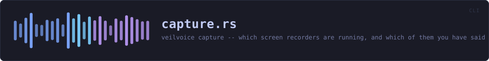

crates/veilvoice-cli/src/capture.rs
veilvoice-cli · 240 lines · read the source
veilvoice capture -- which screen recorders are running, and which of them you have said you meant to run.
The command-line front end to veilvoice_capture. That crate holds the table, the allowlist and the honest account of the three things it cannot do; this file decides where the allowlist lives and prints the result.
Where the allowlist lives
<config>/veilvoice/capture/allow.txtBeside everything else this program keeps. Plain text, nothing secret in it: an allowlist is a note to yourself about which notifications you have already read.
The exit code
veilvoice capture check exits non-zero when something not allowed is running, so it can be a step in a script that refuses to start recording something sensitive while a recorder is open. Allowing a program is precisely how you tell that script you meant it.
It exits zero when the listing itself failed, and says so on the way past. A check that cannot see is not a check that passed, but neither is it a reason to fail a script — the difference is in the words, and the words are printed.
WHAT THIS FILE CONTAINS
240 lines defining 9 functions (6 public), 0 types and 0 constants. Everything below is read out of the source, so it cannot disagree with the code.
What happens when it runs. These are the ways in: public, and nothing else in this file calls them, so they are what an outside caller reaches first.
statusline 66 — What is running, what is allowed, and what this cannot see.
reachesload,allow_path,capture_dirlistline 114 — Every program in the table, whether it is running or not.allowline 147 — Stop notifying about one program.
reachesload,save,allow_path,capture_dirdenyline 164 — Start notifying about one program again.
reachesload,save,allow_path,capture_dircheckline 180 — Look now, and let the exit code answer.
reachesload,allow_path,capture_dir
WHAT CALLS WHAT
The functions this file defines, and the calls between them. An edge means the callee's name appears, called, inside the caller's body — a syntactic reading, not a type-resolved one.
The same graph as Mermaid source
%%{init: {"theme":"base","themeVariables":{"background":"#1a1b26","primaryColor":"#1f2335","primaryTextColor":"#c0caf5","primaryBorderColor":"#7aa2f7","secondaryColor":"#16161e","tertiaryColor":"#16161e","lineColor":"#737aa2","textColor":"#c0caf5","mainBkg":"#1f2335","nodeBorder":"#7aa2f7","clusterBkg":"#16161e","clusterBorder":"#2f3549","fontFamily":"ui-monospace, SFMono-Regular, Consolas, monospace","fontSize":"14px"}}}%%
flowchart TD
n_capture_dir["capture_dir<br/>line 39"]
n_allow_path["allow_path<br/>line 43"]
n_load["load<br/>line 53"]
n_save["save<br/>line 58"]
n_status(["status<br/>line 66"])
n_list(["list<br/>line 114"])
n_allow(["allow<br/>line 147"])
n_deny(["deny<br/>line 164"])
n_check(["check<br/>line 180"])
n_allow --> n_load
n_allow --> n_save
n_allow_path --> n_capture_dir
n_check --> n_load
n_deny --> n_load
n_deny --> n_save
n_load --> n_allow_path
n_save --> n_allow_path
n_status --> n_load
click n_capture_dir href "https://github.com/tilas01/veilvoice/blob/main/crates/veilvoice-cli/src/capture.rs#L39" "open the source"
click n_allow_path href "https://github.com/tilas01/veilvoice/blob/main/crates/veilvoice-cli/src/capture.rs#L43" "open the source"
click n_load href "https://github.com/tilas01/veilvoice/blob/main/crates/veilvoice-cli/src/capture.rs#L53" "open the source"
click n_save href "https://github.com/tilas01/veilvoice/blob/main/crates/veilvoice-cli/src/capture.rs#L58" "open the source"
click n_status href "https://github.com/tilas01/veilvoice/blob/main/crates/veilvoice-cli/src/capture.rs#L66" "open the source"
click n_list href "https://github.com/tilas01/veilvoice/blob/main/crates/veilvoice-cli/src/capture.rs#L114" "open the source"
click n_allow href "https://github.com/tilas01/veilvoice/blob/main/crates/veilvoice-cli/src/capture.rs#L147" "open the source"
click n_deny href "https://github.com/tilas01/veilvoice/blob/main/crates/veilvoice-cli/src/capture.rs#L164" "open the source"
click n_check href "https://github.com/tilas01/veilvoice/blob/main/crates/veilvoice-cli/src/capture.rs#L180" "open the source"
classDef entry fill:#1f2335,stroke:#7aa2f7,color:#c0caf5
class n_status,n_list,n_allow,n_deny,n_check entry
classDef api fill:#1f2335,stroke:#7dcfff,color:#c0caf5
class n_capture_dir api
classDef helper fill:#1f2335,stroke:#bb9af7,color:#c0caf5
class n_allow_path,n_load,n_save helperThis site loads no third-party script, so it cannot run Mermaid; the diagram above is the same nodes and edges drawn by the generator instead. GitHub renders the source below directly.
ITEMS
| Item | Line | Documentation |
|---|---|---|
capture_dir pub fn | 39 | Where the allowlist is kept. |
allow_path fn | 43 | |
load fn | 53 | |
save fn | 58 | |
status pub fn | 66 | What is running, what is allowed, and what this cannot see. |
list pub fn | 114 | Every program in the table, whether it is running or not. |
allow pub fn | 147 | Stop notifying about one program. |
deny pub fn | 164 | Start notifying about one program again. |
check pub fn | 180 | Look now, and let the exit code answer. |